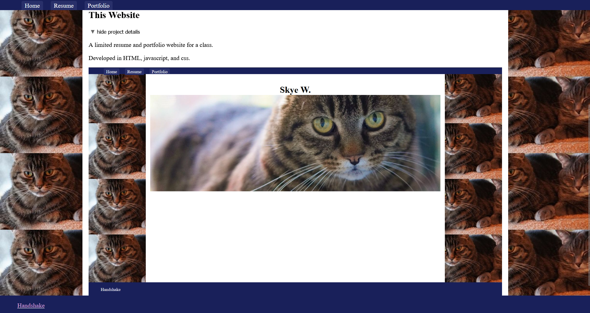

An assembler for a custom assembly language.
Developed in python.

An assembler for a custom assembly language.
Developed in python.
An emulator to simulate execution of a custom assembly language.
Developed in rust.

A limited resume and portfolio website for a class.
Developed in HTML, javascript, and css.
